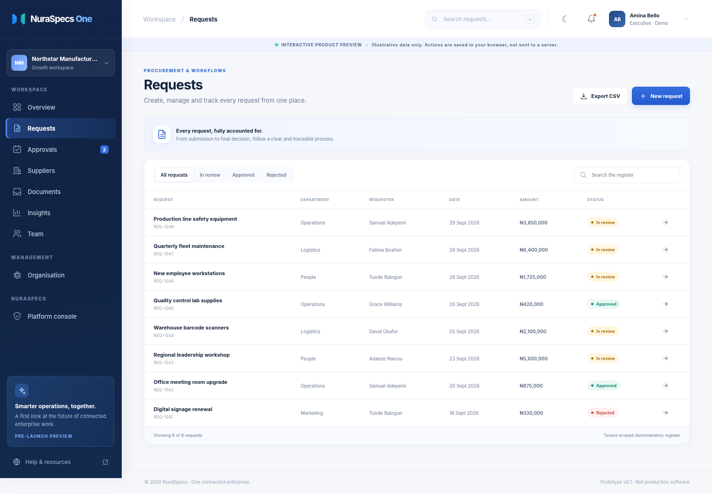

Flagship · Pre-launch
NuraSpecs One
Enterprise operations, workflows and governance — built for growing organisations and global ambition.

Powerful software products and dependable engineering that help organisations simplify work, connect teams and grow with confidence.
Flagship enterprise platform · Interactive preview available
A smarter way to run your organisation. Bring requests, approvals and operational visibility together in one thoughtfully designed enterprise platform.
Illustrative frontend preview; production SaaS service is under development.
NuraSpecs One · Frontend previewSpecialist products with one purpose: make important work simpler, clearer and more connected.
Enterprise operations, workflows and governance — built for growing organisations and global ambition.
Already deployed with a customer. Bring administration, students, attendance, fees and reporting into a more intuitive workspace.
Explore a product preview on your own, then speak with our team when you're ready for a demonstration tailored to your organisation.
Explore the NuraSpecs One product vision using sample Nigerian naira amounts and an interactive approval flow.
Self-guided tours use example data and do not connect to production systems.
When operations cross teams, one request should not become ten disconnected conversations.

A sample procurement journeyTechnology should bring clarity to work, not create more complexity. Our approach combines practical business understanding with thoughtful design and dependable delivery.
We start with the real problems your team faces and shape software around them.
Made with Nigerian organisations in mind, architected to support new markets.
Beautiful interactions where they add value, simple workflows where they matter most.
A focus on maintainability, integration and long-term support as requirements evolve.
Tailored experiences and operational systems.
Cloud engineering and reliable delivery foundations.
Connect the tools and data your team relies on.
Operational support and continuous improvements.
Explore our products at your own pace, or talk to our team about the challenges you're ready to solve.